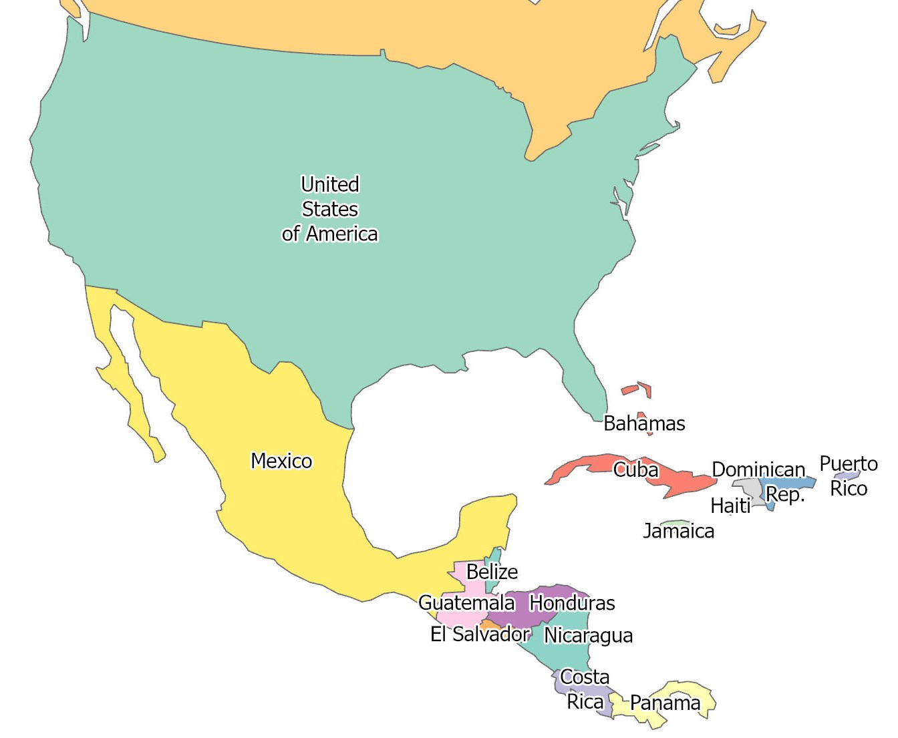

Origin: Limon Province, Costa Rica
Farm: Corbana Partner Farm (Limon)

Harvest: March 12, 2026
Arrived in Store: March 29, 2026
Tap each step to see what happened before this banana reached your cart.

Farm (Corbana partner farm, Limon Province): Bananas are harvested near Guapiles and tagged for traceability.
Who Would You Thank?
From growers to store teams, this banana reached you through many hands.
0 shared messages today
Quick Reflection
How many people do you think touched this banana before it reached this shelf?
0 guesses today